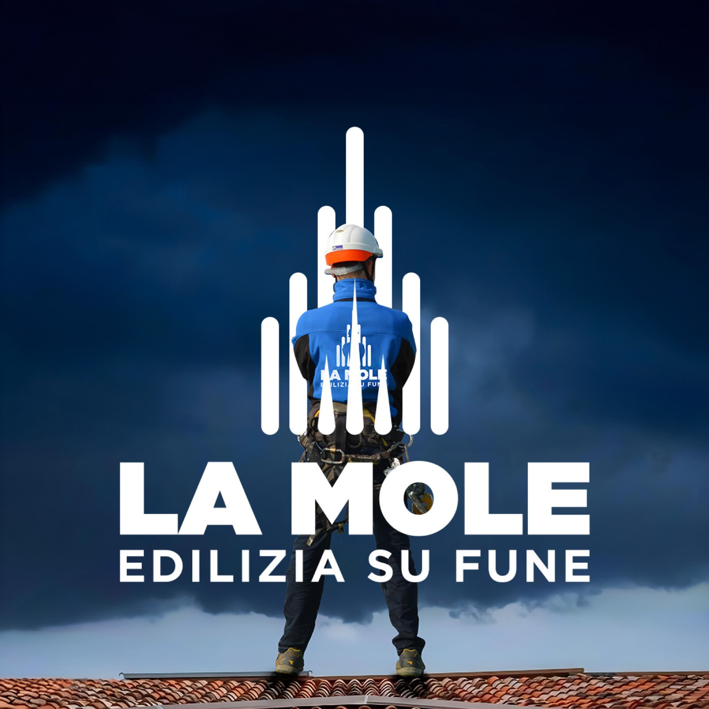
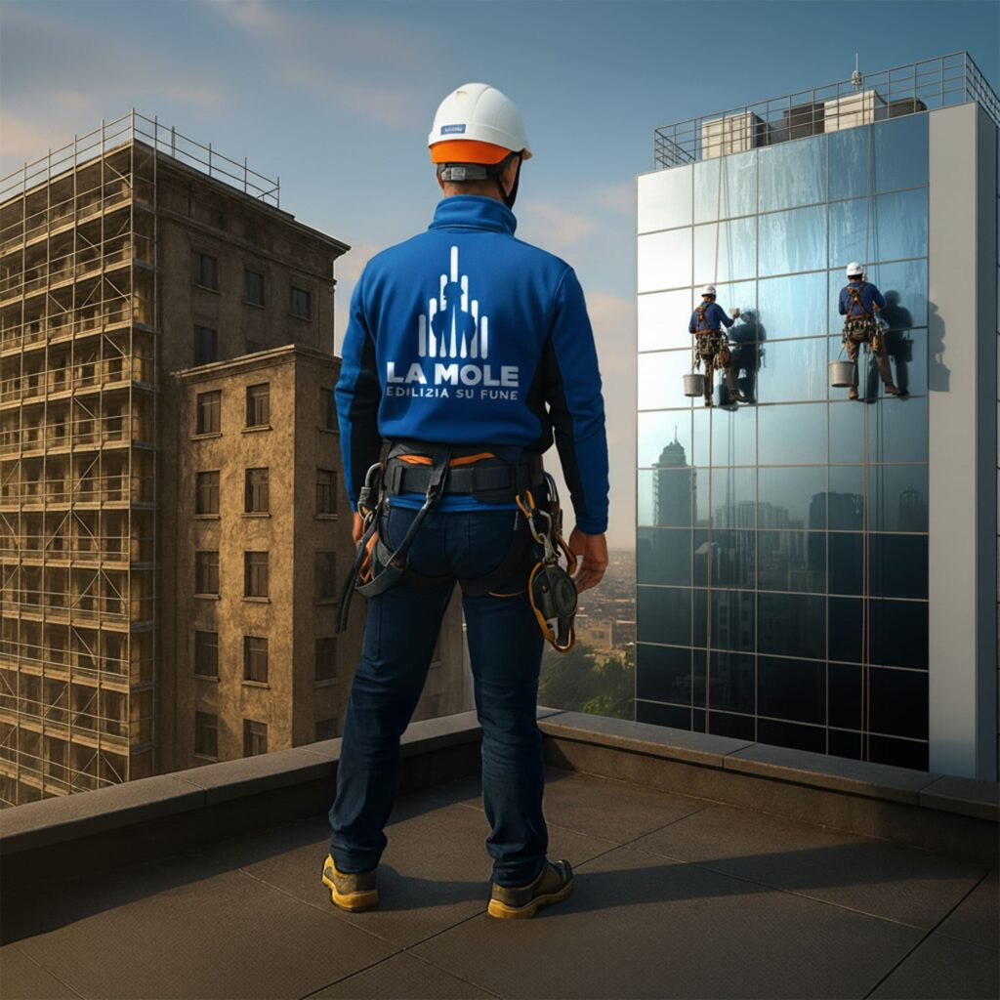

★ Valutazione eccellente su Google
La tua difesa contro
i rischi nascosti.
Edilizia su fune a Torino e in tutta Italia: interventi rapidi e sicuri, senza ponteggi.
- ↕Zero ponteggi
interventi diretti dalla fune - %Fino al 70%
di risparmio sui costi - ✓Personale certificato
tecniche dall’alpinismo
Chi siamo
Soluzioni moderne, sicure e sostenibili
Siamo nati da una solida esperienza nel campo dell’edilizia e da una visione chiara: offrire soluzioni moderne, sicure e sostenibili sfruttando le tecniche dell’edilizia su fune.
Nel tempo abbiamo costruito un team altamente specializzato, formato da professionisti che condividono la nostra filosofia: lavorare con efficienza, sicurezza e rispetto per l’ambiente e per il contesto urbano.
Il nostro obiettivo è innovare il settore delle costruzioni con un approccio flessibile e veloce per soddisfare le esigenze di condomini, aziende e privati.
Scopri l’azienda
Servizi
I nostri servizi
Un’ampia gamma di servizi pensati per garantire soluzioni efficaci e sicure in ogni contesto.
Recensioni
La soddisfazione dei nostri clienti parla per noi
Valutazione eccellente in base a 14 recensioni su Google.
“Educati, professionali, veloci.”
“Una collaborazione eccellente. Sempre disponibili a cercare una soluzione a ogni problema, veloci nell’eseguire i lavori, qualità 100%. Soprattutto la serietà, che oggigiorno è difficile trovare.”
“Ottima esperienza di personale giovane e competente nel settore. Molto attrezzati e attenti per la nostra sicurezza e la loro.”

Vantaggi
Perché l’edilizia su fune conviene
Il vantaggio risiede nella capacità di intervenire in modo rapido ed efficace senza l’installazione di ponteggi, con un notevole risparmio economico e logistico. Grazie all’edilizia su fune riduciamo significativamente i tempi di esecuzione, limitando i disagi per condomini e passanti.
Ogni operazione viene svolta nel pieno rispetto dei protocolli di sicurezza più avanzati, con attrezzature all’avanguardia e un approccio che preferisce soluzioni sostenibili, con un impatto minimo sul contesto urbano.
Tutti i vantaggiHai bisogno di interventi in quota rapidi, sicuri e senza ponteggi?
Con la nostra esperienza e tecniche innovative trasformiamo ogni progetto in un successo concreto, dalla manutenzione al restauro. Mettiamo la nostra competenza al servizio delle tue esigenze.